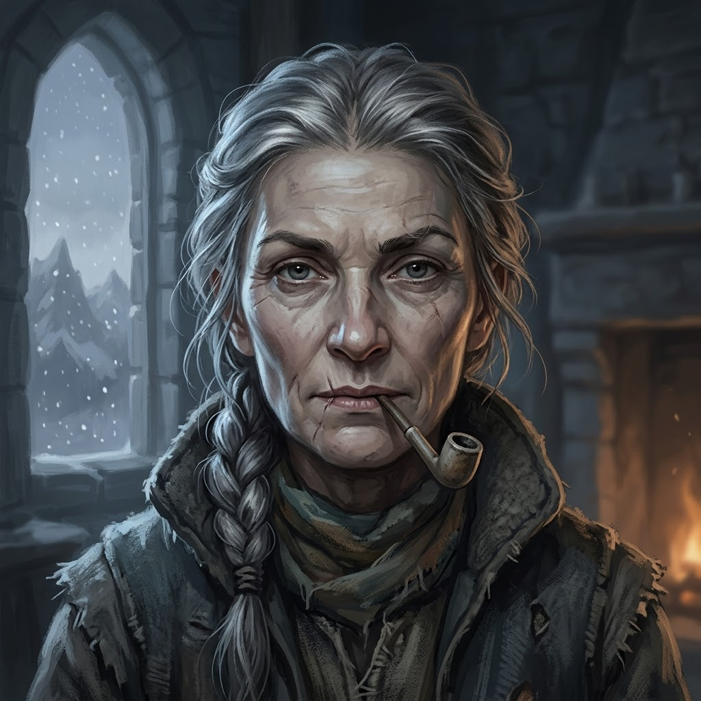
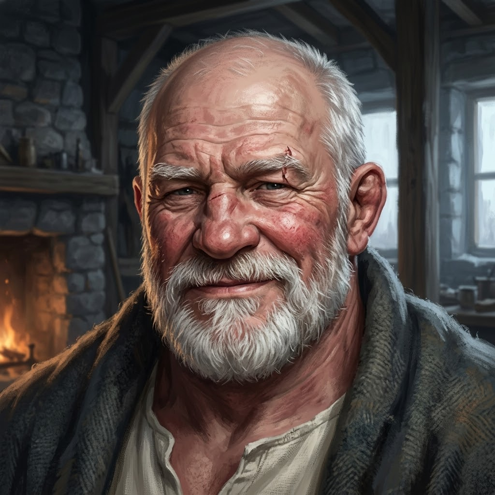
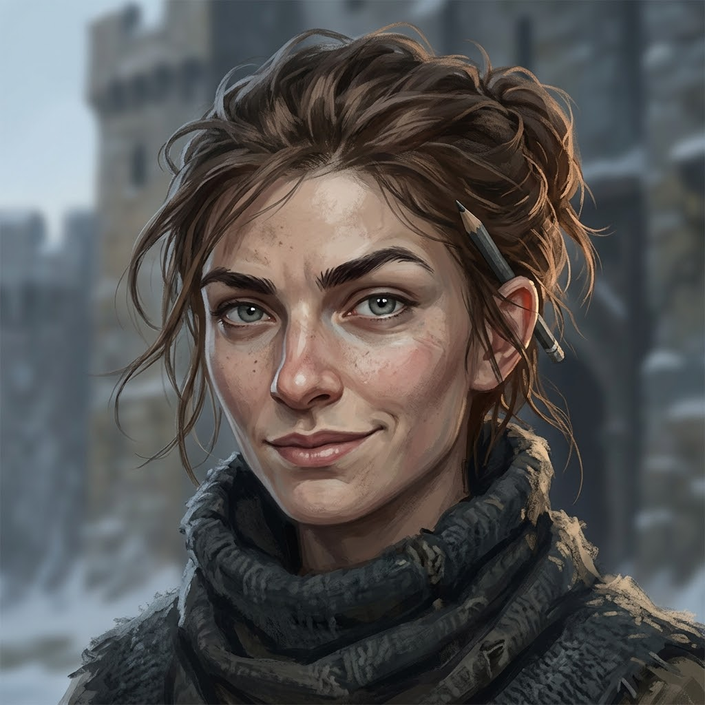

Book I — The House of Menders
Chapter 1 — The Confessor at the Steps
- Latest scene
- Scene 2 — Two Fires
- Where
- Saint Ysolde's, Maelis's cell off the infirmary hall
- Season
- first snow of the year on the Steps
Behind the cell door, Maelis named the two fires, one poured in and one built, and told him the script counts only what is his. She forbade him to speak of it, Hollis most of all, and lifted the latch.
The map
where Darrow is● Darrow ● visited ● not yet — the road so far
The quest
The ListConfessors are on the Holloway: six grey cloaks, a cart and a smoking censer, expected at the foot of the Steps by tomorrow night if the snow holds off, with a list of the Faithless at Saint Ysolde's that was read aloud at the inn in Coldmere. Hollis's name is second on it. Asked who was first, Wren only looked at Darrow.
What he is fighting
The soft season. The knee feels well, and Maelis says that is exactly the danger: the thread is softest now, and the quiet is a liar. He can walk to the chapel and back without the stick; he cannot kneel, and he has asked fourteen times to go down the Steps and been told no fourteen times.
The choice
No choice waits on Darrow yet.
With him
3


The Reckoning
Darrow
Ser Darrow of Edgemoor
Level 4 · Bound · HP 34
the faint numbers are the ones he read behind his own
The Binding
Knots tied II of VII- IThe Knot of Straighteningthe leg can be made straightopens Book Itied
- IIThe Knot of Walkingthe stride is true againopens Book Itied
- IIIThe Knot of Standingthe leg bears his weightuntied
- IVThe Knot of the Roadit can rununtied
- VThe Knot of Lightningit can leap, land, sprint and stopuntied
- VIThe Knot of Turningit can turn at speed: the movement that broke ituntied
- VIIThe Knot of the Fieldit is whole for battleuntied
The soft season: do not trust the quiet.
The chapter so far
Costly, so far.
The dice
No dice have been cast yet.